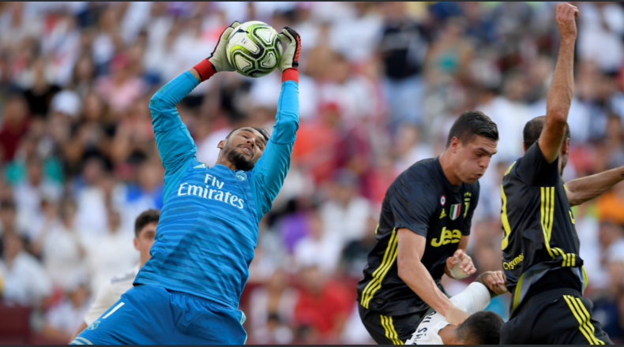

NOTICIAS DE DEPORTES
Keylor Navas, cerca de dejar el Real Madrid
Al parecer uno de los clubes más importantes ha puesto los ojos en Keylor, actual portero del Madrid que compite con Thibaut Courtois por la titularidad. ¿Se irá?
Luego de una grave lesión del guardameta del City, Claudio Bravo, el equipo inglés está buscando nuevos elementos para cuidar el arco. El chileno sufrió una lesión en el tendón de Aquiles de la pierna izquierda por lo que estará incapacitado al menos la mitad de la campaña. El Manchester City, en teoría, ya tiene al suplente de Bravo. Ederson, quien antes jugaba para el Benfica y por el que el Manchester pagó 40 millones de euros. Sin duda el portero defiende bien al equipo pero necesita tener un relevo de reserva. De acuerdo a la prensa europea, los ojos del equipo están puestos en Keylor, pero saben que será difícil que el costarricense quiera dejar al equipo blanco, que lo ha apoyado siempre y para el que ha logrado servir en el gane de tres Copas de Europa seguidas. El Real Madrid no presionaría a su guardavallas para quedarse pues cuenta con el apoyo incondicional del club, sin embargo sería una decisión que Navas tendrá que valorar y llegado el momento dar una respuesta cuando esta sea requerida por parte del City. ¿Cómo se tomaría la afición madridista la salida del portero?